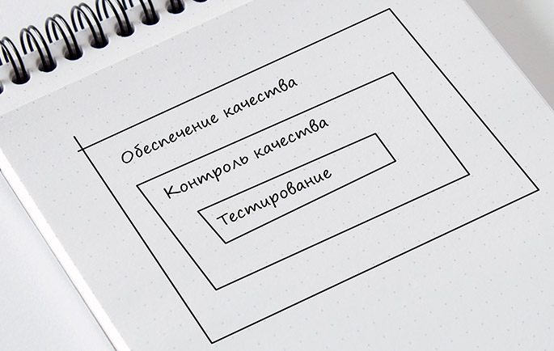
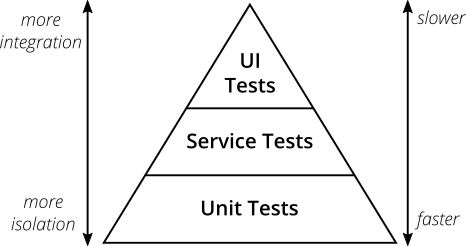
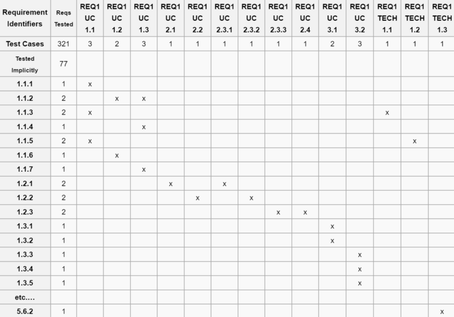

Кратко о QA#
Жизненный цикл ПО#
Жизненным циклом программного обеспечения (SLC) является период времени, начинающийся с момента появления концепции ПО и заканчивающийся тогда, когда использование ПО более невозможно.
Жизненный цикл программного обеспечения обычно включает в себя следующие этапы:
- Принятия решения (идея) о необходимости создания ПО;
- Сбор и анализ требований;
- Дизайн (Системы и ПО) на основе требований;
- Кодирование на основе дизайна системы;
- Тестирование;
- Внедрение в пользовательскую среду;
- Сопровождение (в том числе фиксация найденных в пользовательской среде ошибок);
- Изъятие из эксплуатации (редко);
Quality Assurance (QA) или немного о тестировании#
Существует 3 термина, которые легко перепутать: тестирование (Testing), контроль качества (QC – Quality Control) и обеспечение качества (QA — Quality Assurance). Все они связаны друг c другом: QA – самое широкое понятие, оно включает в себя QC, в которое входит тестирование.

-
Обеспечение качества (QA) отвечает за весь процесс разработки, поэтому должно быть интегрировано во все этапы разработки: от описания проекта до тестирования, релиза и даже пост-релизного обслуживания. Специалисты QA создают и реализуют различные тактики для повышения качества на всех стадиях производства: подготовка и установление стандартов, анализ качества, выбор инструментов, предотвращение появления ошибок и постоянное усовершенствование процесса.
-
Задача Контроля качества (QC) — гарантировать соответствие требованиям (поиск ошибок и их устранение). QC ориентирован на проверку продукта, включает в себя многие процессы, такие как анализ кода, технические обзоры, анализ дизайна, тестирование и пр.
-
Тестирование — это проверка результатов работы на соответствие требованиям.
Пирамида тестирования#

- Unit тесты — тестирование отдельного модуля ПО (в Java модулем является класс). Проверяется только сам модуль, всего его зависимости заменяются на заглушки. Данный тип тесты должны писать разработчики.
- Service/Integration/API тесты — интеграционные тесты. Проверяется группа модулей, их взаимодействие. Могут писать как разработчики, так и автоматизаторы из QA
- UI тесты — тестирование пользовательского интерфейса. Разрабатываются только автоматизаторами из QA.
- Ручное тестирование — обычно тестирование пользовательского интерфейса руками. Дешево и сердито.
Инструменты тестирования (в контексте Java)#
Звездочкой обозначены обязательные знания по данному инструменты
- Unit тестирование:
- Junit 4* — самый распространненый фреймворк для тестирования. Есть абсолютно везде.
- Junit 5 — свежеая версия предудыщего фреймворка, но пока встречается реже
- Spock — редкий инструмент для BDD (Behavior-driven development) тестирования на языке Groovy.
- Mockito* — вспомогательная библиотека, позволяющая изолировать модуль от зависимостей.
- PowerMock — более мощная версия предыдущей библиотеки
- TestNG — аналог для Junit, но не так популярен
- Integration/API тестирование:
- REST Assured* — библиотека для тестирования API
- Cucumber* — самый популярный фреймворк для написания интеграционных тестов. Есть для многих языков
- Gauge — тоже самое, но с небольшими отличиями
- UI тестирование
- Selenium* — инструмент, который позволяет эмулировать браузеры и взаимодействие пользователя и UI.
Матрица соответствия требований (Requirements Traceability Matrix)#
Это двумерная таблица, содержащая соответствие функциональных требований (functional requirements) продукта и подготовленных тестовых сценариев (test cases). В заголовках колонок таблицы расположены требования, а в заголовках строк — тестовые сценарии. На пересечении — отметка, означающая, что требование текущей колонки покрыто тестовым сценарием текущей строки. Матрица обычно хранится в виде электронной таблицы.
Матрица соответствия требований используется QA-инженерами для валидации покрытия требований по продукту тестами. Цель «Traceability Matrix» состоит в том, чтобы выяснить: какие требования «покрыты» тестами, а какие нет. избыточность тестов (одно функциональное требование покрыто большим количеством тестов).
